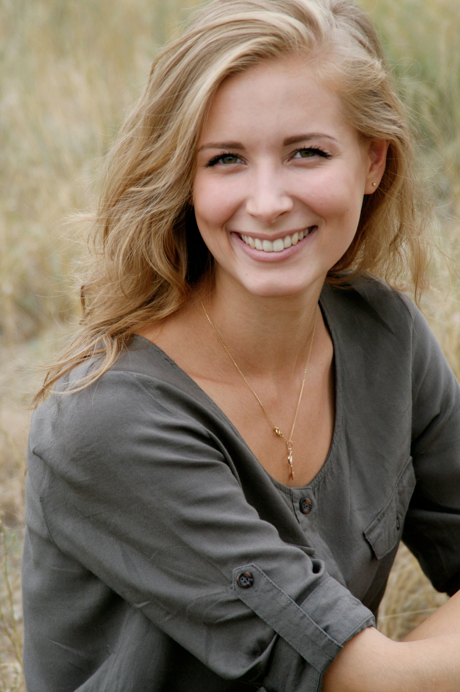
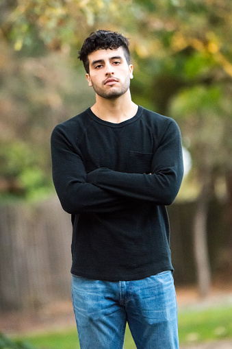

Nos candidats
Pour la saison 1
Parmi ces 5 candidats, il y en a deux qui se démarque du reste: Karim et Julie.
Les restes sont des personnes à la recherche
d´aventure
Les restes sont des personnes à la recherche d´aventure
Julien
Origine - Français 24 ans

Chloé
Origine - Espagnole 19 ans

Emmanuel
Origine - Belge 31 ans
Karim
Origine - Marocain 52 ansKarim se distingue des autres à cause de son passé. Dans son enfance, à l’âge de 7 ans, ses parents l’ont abandonné dans un labyrinthe et il y est resté pendant 2 jours. Son enfance d’orphelin lui à laisser des séquelles irréversibles et il vient prendre sa revanche sur les labyrinthes Il a aussi une terrible phobie des chiens.

Julie
Origine - Française 26 ansJulie par contre a des problèmes financier.
Jeune, mais déjà endettée, elle a besoin des 10000 euros de récompense
pour payer toutes ses dettes.
Elle aimerais aussi gagner le voyage pour aller au japon.